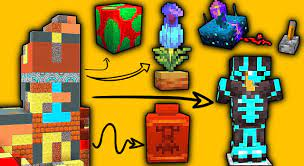
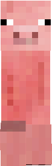
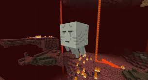

Майнкрафт створила компанія mojang під командою Маркуса Персон або (Нотч) в 2011 році.
В майнкрафті розробляється нова версія (1.20).
Кріпер був створений по пречині бага в коді свині.
Майнкрафт знімають багато популярних блогерів.

Перша версія Minecraft була створена за шість днів

Перша назва ігри була Cave Game,потім Minecraft: Order of the Stone.
Звук гастів запозичили в кішки розробника
